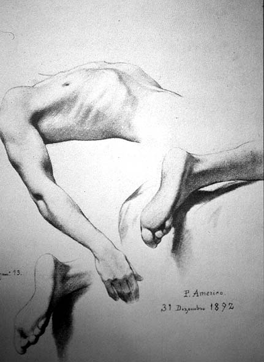

|
|  |
|
Pedro Américo de Figueiredo e Melo, Estudo de anatomia para Tiradentes Esquartejado, 1893
|
Brazil´s republicans, following the military overthrow of the monarchical state in 1889, faced the difficult question of how to popularise their cause amongst a populace which, in most accounts of the coup, had been at best an indifferent bystander, at worst a force that mistrusted their new rulers and cherished the memory of a benign monarchy that had only recently abolished slavery against the resistance of the latifundist oligarchy. Tiradentes, the 'martyr' of the anti-monarchist conspiracy of 1789 in Minas Gerais, who had been cruelly executed and quartered, was a hero republican artists such as Décio Villares and Pedro Américo (a recent convert to the republican cause) sought to transform into a Brazilian Christ –even the new capital, whose planning preparations started in 1892 (only to be laid aside again until its eventual construction from 1956-60), would have been called 'Cidade Tiradentes' according to the proposal of one constitutional delegate.
|